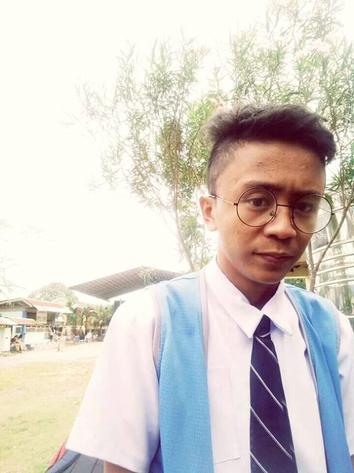

Hi. I'm Abdulbashit Manguda Samad But They Preferred To Call Me Baste. 18years Of Existence And A Senior High Student Currently Studying At Notre Dame RVM-College Of Cotabato Taking Up Humanities And Social Sciences
. I'm The Sahia Of Wahida Samad, My Tailor Mother And Theng Samad, A Former Teacher But He Passed Away Since I Was 2years Old. English And Politics Are My Favorite Subject While Green Is My Favorite Color That Symbolizes Peace. An introverted Individual And Articulate Are Some Of My Characteristics And I Believe That Future Belongs To Those Who Believe In The Beauty Of Their Dreams.

Facts About Me
Did you know that--I'm An Avid Fan Of Michael Pangilinan, Ed Sheeran And Ricci Rivero
Did you know that--My Weekend Routine Is To Stay At The Rooftop With My Favorite Jewel(book) Drinking coffee while Watching The Sunrise